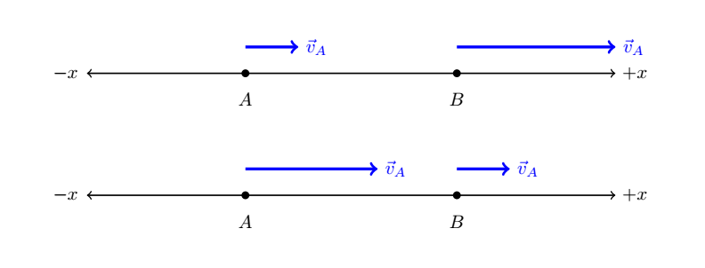
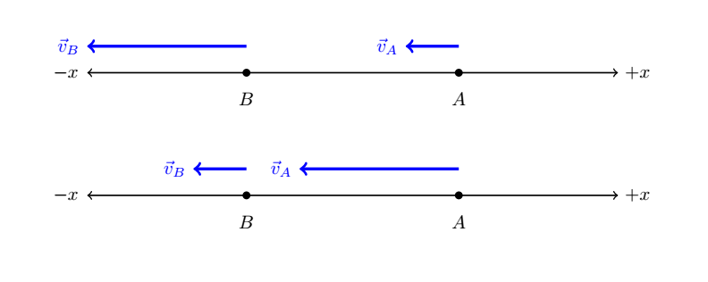
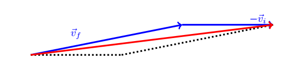

C5.2 Average Acceleration#
The approaches we made regarding the relationship between position vector and velocity vector can be directly applied to the concept of acceleration with the position replaced with velocity and velocity replaced with acceleration. So let us try that!
C5.2.1 Definition#
Acceleration is the rate of change of velocity of an object. Since the velocity is a vector, the acceleration must also be a vector.
If we let \(\Delta \vec{v}\) be the change in velocity and \(\Delta t\) be the elapsed time interval, then the average acceleration is
Example 1
To a physics professor, acceleration is always a fascinating concept. To get a rush of science, the professor is going to determine the accelearion of his Kawasaki ZX-14. Starting from rest at t = 0 s, the beast reaches a speed of 100.0 km/hr in mere 2.8 s. What was the magnitude of average the acceleration?
Solution
We notice that since we are only given the speed, we can not determine the direction of the velocity or the direction of the acceleration, only its magnitude.
The magnitude of the acceleration is (converting from km/hr to m/s):
Note: the acceleration due to gravity is 9.8 m/s\(^2\), so the professor is experiencing an acceleration slightly over 1-g during this acceleration.
Example 2
A particle is starting from rest and then starts traveling in the positive y-direction. After 5.0 s, the speed of the particle is 15 m/s. Find the average acceleration of the particle during this time interval.
Solution
In this case, we can deduce that the initial velocity is \(\vec{v}_i = 0~\hat{j}\) and the final velocity is \(\vec{v}_f = 15~\hat{j}\), both in units of m/s. The average acceleration is
An object is traveling in the positive x-direction. At a given time its speed is 10 m/s and 7 s later its speed is 8 m/s. What is its average acceeleration between these two instances?
5.2.2 Acceleration vs. Deceleration#
Mr. and Mrs. Layman can sometimes be heard speaking of acceleration and deceleration. With those terms they are probably speaking of when they were speeding up on the highway: “we accelerated past that slow car in the outermost lane”, or “wauw, I had to decelerate so hard due to that slow car in the outermost lane”. In daily languague we tend to associate acceleration with speeding up and deceleration with slowing down. However, this can lead to faulty conclusions in physics since directions are not taken into account.
Let us consider how it works out through the following scenarios:
Scenario 1 and 2#
For scenario 1, we consider the top panel: an object is traveling in the positive direction (as indicated by velocity vectors in that direction) and we take two measurements of the velocity at points A and B. Since \(\vec{v}_B\) is longer than \(\vec{v}_A\), we conclude that the object is speeding up (moving faster at point B than at point A). The change in velocity is
and the acceleration is therefore also greater than zero. In common language: we are accelerating and speeding up. Mr. and Mrs. Layman are ok! 
For scenario 2, we consider the bottom panel: an object is traveling in the positive direction (as indicated by velocity vectors in that direction) and we take two measurements of the velocity at points A and B. Since \(\vec{v}_B\) is shorter than \(\vec{v}_A\), we conclude that the object is slowing down (moving slower at point B than at point A). The change in velocity is
and the acceleration is therefore also less than zero. In common language: we are decelerating and slowing down. Mr. and Mrs. Layman are ok again!
Scenario 3 and 4#
For scenario 3, we consider the top panel: an object is traveling in the negative direction (as indicated by velocity vectors in that direction) and we take two measurements of the velocity at points A and B. Since \(\vec{v}_B\) is longer than \(\vec{v}_A\), we conclude that the object is speeding up (moving faster at point B than at point A). The change in velocity is
since we have a longer, but negative vector subtracted by a shorter, negative vector.
The acceleration is therefore also less than zero. In words: we are having a negative acceleration, but speeding up. A negative acceleration is typically what we refer to as deceleration, but now its meaning is wrong! 
For scenario 4, we consider the bottom panel: an object is traveling in the negative direction (as indicated by velocity vectors in that direction) and we take two measurements of the velocity at points A and B. Since \(\vec{v}_B\) is shorter than \(\vec{v}_A\), we conclude that the object is slowing down (moving slower at point B than at point A). The change in velocity is
since we have a shorter, but negative vector subtracted by a longer, negative vector.
The acceleration is therefore also greater than zero. In words: we are having a positive acceleration, but slowing down. A positive acceleration is typically what we refer to speeding up in Layman’s term, but now its meaning is wrong!
It all depends on choice of reference frame.
An object is at rest at t = 0 s. After 5 s, the object has sped up to 50 m/s in a negative direction. Find its average acceleration during this time interval.
C5.2.3 Acceleration in 2D#
In the above examples and illustrations, I restricted them to 1D to emphasize the concept of acceleration. However, we are often presented with problems in 2D or 3D. The 2D case is easier to visualze and we will focus on that in the following while it can be extended to 3D without problems.
Geometrical Approach#
Above, we used geometrical approach in 1D by aligning vectors with the 1D axis. We saw that the acceleration vector was always aligned with the velocity vectors (either parallel or anti-parallel). This is a wrong conclusion to draw as it can not be applie to 2D in general. Instead, we should observe, or state, that
We will illustrate that by the following example.
Example 3
Solution
It would be tempting to put the acceleration in the same direction as the final velocity, but that is wrong. Here is a sketch showing the two velocity vectors:
The key is to find the change in velocity vector as it is representative of the direction of the acceletaion. Let us refresh how we do that. The change in velocity is the final velocity subtracted by the initial velocity:
To represent that geometrically, we can say we are adding the negative of initial vector to the final vector. Let us do that by using a parallelogram, where the diagonal vector shown in red is the result: \( \Delta \vec{v} = \vec{v}_f - \vec{v}_i \)
We can now see that the acceleration is not aligned with any of the two velocity vectors as it is in the direction of the change in velocity!
3.2 Analytic Approach#
This approach is similar to the example 2 above as we consider each component of the velocities and acceleration separately. This was the approach for the relationshop between displacement and velocity, so the mathematical approach is similar but with different parameters.
In the analytic approach, we write the average acceleration as
If we write out the changes in velocity, we have
Example 4
A particle is initially moving with a velocity of \(\vec{v}_0 = 2.0~\hat{i} - 1.5~\hat{j}\) and undergoes an acceleration during an elapsed time of 0.50 s to achieve a new velocity of \(\vec{v} = 3.0~\hat{i} + 1.0~\hat{j}\). What was the average acceleration of the particle during this time frame? Assume velocity units in m/s.
Solution#
We can identify the x- and y-components of the initial and final velocities and insert them into the equation above:
A particle is initially moving with a velocity of \(\vec{v}_i = 1.5~\hat{i} + 1.5~\hat{j} - 0.5~\hat{k}\) and undergoes an acceleration during an elapsed time of 0.25 s to achieve a new velocity of \(\vec{v}_f = -2.0~\hat{i} + 3.0~\hat{j} - 0.5~\hat{k}\). What was the average acceleration of the particle during this time frame? Assume velocity units in m/s and comment on your result (for example, is the particle accelerating in all directions?)
A particle is initially moving with a velocity of \(\vec{v}_i = 2.5~\hat{i} - 0.5~\hat{k}\) and undergoes an acceleration during an elapsed time of 0.25 s to achieve a new velocity of \(\vec{v}_f = 1.0~\hat{i} - 3.0~\hat{j} - 1.5~\hat{k}\). What was the average acceleration of the particle during this time frame?
Alternatively, we can write the average acceleration using bracket notation:
and the answer to Example 4 would be
I find that most students prefer the later notation as the unit vectors do not appear explicitly. However, it is my goal to introduce you to the various notations, and I hope you will grow to become comfortable with all the approaches.